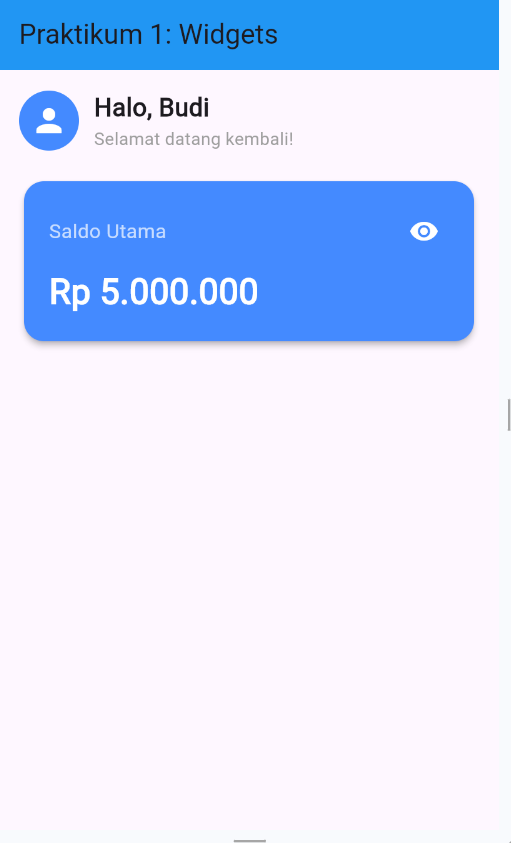
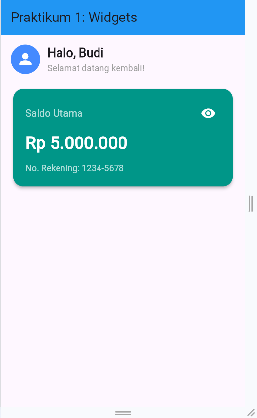
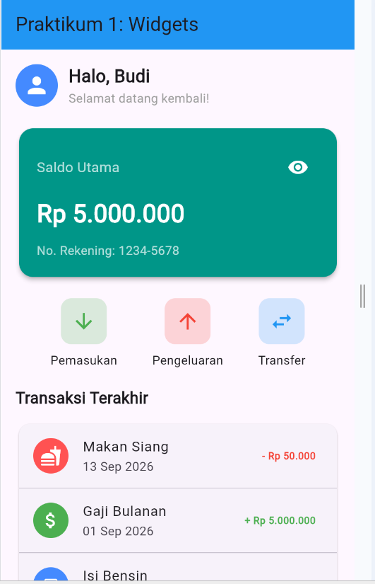
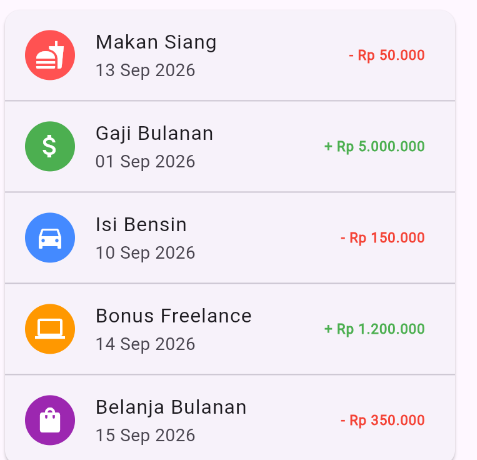

Pengembangan aplikasi mobile modern menuntut pembuatan antarmuka pengguna (User Interface) yang responsif, terstruktur, dan interaktif. Framework Flutter, yang dikembangkan oleh Google dan menggunakan bahasa pemrograman Dart, hadir sebagai solusi lintas platform (cross-platform) yang efisien. Dalam pengembangan frontend aplikasi mobile, pemahaman terhadap hierarki widget dan tata letak (layouting) menjadi fondasi utama bagi seorang pengembang. Aplikasi dibangun dengan cara menyusun komponen-komponen widget secara bertingkat, baik yang bersifat statis maupun dinamis.
Praktikum ini berfokus pada dua konsep dasar utama Flutter:
Pada materi dasar, dipelajari perbedaan antara komponen UI yang tidak berubah dan komponen UI yang dapat berubah merespons interaksi pengguna. Selanjutnya, dipelajari teknik penyusunan elemen UI secara horizontal (Row), vertikal (Column), pembungkusan area dekoratif (Container, Card), baris informasi instan (ListTile), hingga penanganan area yang dapat digulirkan menggunakan SingleChildScrollView.
Hubungan materi ini dengan pemrograman Dart/Flutter terletak pada penerapan konsep Object-Oriented Programming (OOP), karena hampir seluruh elemen UI di Flutter merupakan objek turunan dari kelas Widget. Pemanggilan metode seperti setState() adalah bentuk manipulasi state internal objek Dart yang secara langsung memicu pembaruan antarmuka (re-render).
Materi ini penting bagi mahasiswa Informatika karena memberikan pemahaman mendasar tentang arsitektur antarmuka aplikasi — tidak hanya merancang tampilan menarik, tetapi juga mengelola alur data antarmuka, mengoptimalkan tata letak agar adaptif terhadap berbagai ukuran layar, serta menerapkan clean code pada komponen UI yang terstruktur.
Memahami kerangka dasar aplikasi Flutter seperti MaterialApp dan Scaffold.
Membedakan penggunaan serta karakteristik StatelessWidget dan StatefulWidget.
Menerapkan fungsi setState() untuk membuat antarmuka pengguna yang interaktif dan dinamis.
Menerapkan widget Row untuk menata deretan tombol aksi secara horizontal.
Menerapkan widget Column untuk menyusun daftar transaksi secara vertikal.
Mengatur tata letak (padding, margin) serta styling (color, border radius, elevation) menggunakan Container dan Card.
Menggunakan widget ListTile untuk membuat baris daftar riwayat transaksi yang rapi dan terstruktur.
Menerapkan SingleChildScrollView untuk mencegah masalah overflow saat konten melebihi batas layar.
Menyelesaikan tugas dan latihan modul berupa penyesuaian styling tema warna, penambahan teks riwayat rekening, dan penambahan data transaksi.
Langkah-langkah disusun mengikuti urutan kegiatan pada Modul I dan Modul II. Kode program mengacu pada implementasi nyata file main.dart yang memuat seluruh langkah praktikum beserta tugas latihan modul.
Langkah: Membuat header halaman statis untuk menampilkan sapaan nama pengguna serta gambar avatar profil. Elemen disatukan secara horizontal (Row) dan vertikal (Column).
Penjelasan Kode:
| Elemen / Syntax | Fungsi / Peranan |
|---|---|
class GreetingWidget extends StatelessWidget |
Widget immutable, tidak memiliki state dinamis. |
const GreetingWidget({super.key}) |
Constructor konstan. |
build(BuildContext context) |
Method utama yang mengembalikan struktur widget. |
Row |
Layout horizontal. |
CircleAvatar |
Lingkaran avatar berisi ikon Icons.person, ukuran 30, latar Colors.blueAccent. |
SizedBox(width: 12) |
Jarak horizontal 12px antar komponen. |
Column |
Layout vertikal dengan CrossAxisAlignment.start (rata kiri). |
Text |
Menampilkan "Halo, Budi" (bold, 20) dan "Selamat datang kembali!" (abu-abu). |
Hasil Praktikum: Tampil baris paling atas halaman berisi lingkaran avatar biru dengan ikon orang, diikuti dua baris teks sapaan di sebelah kanannya.

Analisis: Step ini melatih pembuatan komponen antarmuka statis. StatelessWidget dipilih karena sapaan pengguna tidak memerlukan perubahan data real-time, sehingga lebih efisien dari sisi konsumsi memori.
Langkah: Membuat kartu saldo interaktif menggunakan StatefulWidget yang dapat menyembunyikan/menampilkan nominal saldo serta menampilkan nomor rekening saat ikon mata ditekan.
Penjelasan Kode:
| Elemen / Syntax | Fungsi / Peranan |
|---|---|
class BalanceCardWidget extends StatefulWidget |
Widget dinamis yang membutuhkan pemeliharaan state. |
createState() |
Mengembalikan instance _BalanceCardWidgetState. |
bool _isBalanceVisible = true |
Variabel state pelacak status tampil/sensor saldo. |
_toggleVisibility() |
Memanggil setState() untuk membalik nilai _isBalanceVisible. |
Card |
Latar Colors.teal (Tugas 1 Praktikum 1), sudut melengkung 16px, elevation 4. |
IconButton |
Tombol ikon mata dengan event onPressed → _toggleVisibility. |
| Ternary Operator | Memilih ikon (visibility/visibility_off) dan teks nominal (angka/sensor) secara kondisional. |
Text('No. Rekening: 1234-5678') |
Teks statis tambahan (Tugas 2 Praktikum 1). |
Hasil Praktikum: Kartu berwarna hijau teal dengan tulisan "Saldo Utama", tombol ikon mata di kanan atas, nilai saldo "Rp 5.000.000" (atau "Rp *********" saat disensor), dan teks "No. Rekening: 1234-5678". Tampilan berganti instan saat ikon mata diklik.

Analisis: Mendemonstrasikan manajemen state lokal Flutter. Saat setState() dipanggil, Flutter menandai widget untuk dirender ulang sehingga tampilan mencerminkan perubahan _isBalanceVisible secara interaktif. Perubahan warna ke teal dan penambahan nomor rekening membuktikan penerapan instruksi tugas modul.
Langkah: Membuat deretan tombol aksi cepat ("Pemasukan", "Pengeluaran", "Transfer") secara horizontal menggunakan Row dan helper function untuk reusabilitas kode.
Penjelasan Kode & Analisis:
Row + mainAxisAlignment: MainAxisAlignment.spaceEvenly: Membagi sisa ruang kosong secara rata di antara dan di sekitar widget anak._buildActionButton(...): Helper method yang mengembalikan Column, menerima IconData, String label, dan Color color. Ini adalah praktik Dart yang baik untuk menghindari duplikasi kode (DRY).Container: Membungkus ikon dengan latar transparan color.withOpacity(0.2), sudut tumpul 12px, dan padding 12px.Hasil Praktikum: Tiga tombol aksi sejajar: Pemasukan (ikon hijau), Pengeluaran (ikon merah), Transfer (ikon biru), lengkap dengan label di bawah masing-masing ikon.

Langkah: Menyusun daftar riwayat transaksi vertikal menggunakan Column, Card, ListTile, dan Divider. Mencakup Tugas 1 & 2 Praktikum 2 (penyesuaian warna indikator transaksi dan penambahan data transaksi fiktif baru).
Penjelasan Kode & Analisis:
ListTile: Terdiri dari 3 slot utama, yaitu leading (CircleAvatar berikon), title/subtitle (nama & tanggal transaksi), serta trailing (nominal). Mempermudah pembentukan UI daftar tanpa menyusun Row/Column secara manual.Divider(height: 1): Garis tipis penyekat antar item transaksi.Hasil Praktikum: Daftar 5 item riwayat transaksi dalam satu kartu berbayangan, tiap baris memiliki ikon berwarna, nama, tanggal, dan nominal berwarna hijau/merah sesuai jenis transaksi.

Langkah: Mengintegrasikan seluruh widget (GreetingWidget, BalanceCardWidget, ActionButtonsWidget, RecentTransactionsWidget) ke dalam satu layar DashboardScreen yang dibungkus SingleChildScrollView, serta konfigurasi aplikasi utama MyApp.
main.dart)Penjelasan Kode & Analisis:
void main() => runApp(const MyApp()): Entry point aplikasi Flutter.MaterialApp: Widget root yang menetapkan tema Material Design, judul aplikasi, dan halaman awal (home).Scaffold: Menyediakan struktur dasar antarmuka dengan appBar dan area body.SingleChildScrollView: Menyediakan kemampuan scrolling pada body. Membungkus Column di dalamnya mencegah masalah overflow pixels (garis hitam-kuning) ketika jumlah item transaksi bertambah atau saat aplikasi dijalankan pada perangkat berlayar kecil.Padding(padding: EdgeInsets.all(16.0)): Memberikan jarak seragam 16px dari seluruh tepi layar.Hasil Praktikum: Aplikasi berjalan utuh membentuk antarmuka Dashboard Expense Tracker; layar dapat digulirkan secara halus saat konten melebihi tinggi layar.
StatelessWidget (komponen statis) dan StatefulWidget (komponen interaktif). Fungsi setState() terbukti efektif sebagai mekanisme dasar untuk merender ulang tampilan saat terjadi perubahan state internal.
Row, Column, Card, Container, dan ListTile memungkinkan pembangunan antarmuka Dashboard Expense Tracker yang rapi, informatif, dan responsif.
SingleChildScrollView berhasil mencegah kendala UI overflow saat komponen antarmuka melebihi batas layar perangkat.